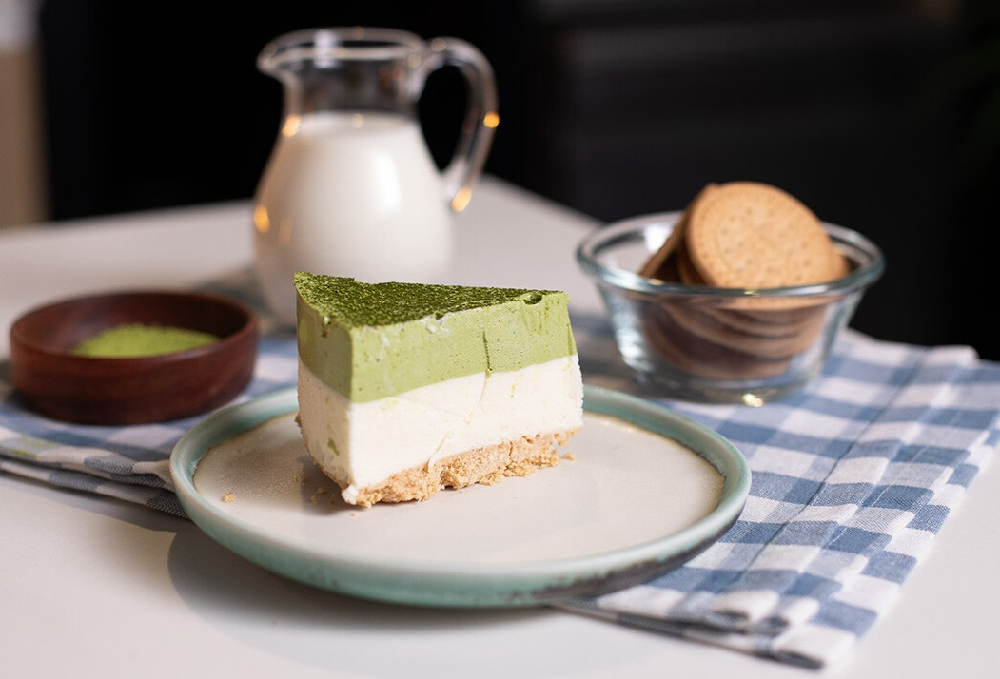
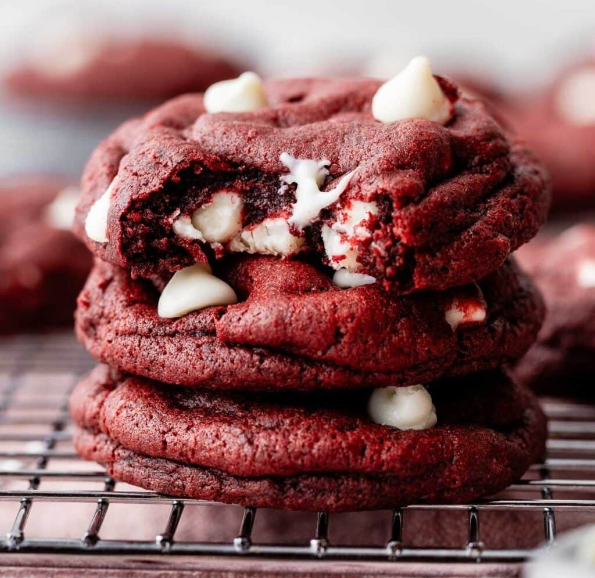
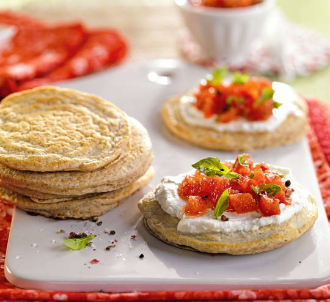
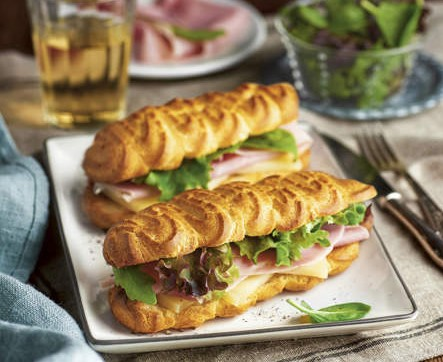

Meriendas para cada ocasion
La merienda es mucho más que una comida intermedia: es un momento de pausa, de encuentro y de disfrute. En esta sección vas a encontrar opciones pensadas para todos los gustos, organizadas en propuestas dulces y saladas.
Opcion de merienda dulce
Las meriendas dulces reúnen clásicos caseros y preparaciones irresistibles ideales para acompañar un café o un té, desde budines y galletitas hasta tortas y coockies simples.
Opcion de merienda salada
Las meriendas saladas, en cambio, ofrecen alternativas equilibradas y sabrosas como tostados, sándwiches, tartas y opciones más livianas, perfectas para quienes prefieren algo menos dulce pero igual de tentador.

Tarta mousse de matcha
El chocolate blanco y el matcha son un dúo que siempre funciona. Aunque no me guste el matcha en bebida, en postres es un acierto seguro. Si eres como yo, anímate a probarlo en repostería, ¡es otra experiencia!
Ver receta
Coockies Red velvet
Estas galletas con chispas de chocolate, inspiradas en el pastel de terciopelo rojo, combinan la suavidad y el sabor a cacao del pastel con los bordes crujientes y la cremosidad de las galletas clásicas. Con azúcar moreno, cacao, vainilla y suero de leche, tienen el color rojo característico y el sabor de ambos postres.
Ver receta
Flan frutal
Si te gusta el flan, no puedes dejar pasar esta receta. Es ligera, sin azúcar y con fruta, lo que la hace más saludable que los flanes tradicionales. Su textura suave y cremosa, combinada con el frescor de los kiwis y la naranja, la convierte en un postre fácil y delicioso para cualquier ocasión.
Ver receta
Tortitas de avena con requesón y tomate
¡Convierte tu merienda en un bocado saludable y delicioso! Tortitas de avena con requesón, tomate y hierbas, llenas de sabor y energía.
Ver receta
Crepes de Nutella y fresas
Estos crepes de Nutella y fresas son la merienda perfecta para darte un capricho dulce. Una combinación irresistible que alegrará cualquier momento del día.
Ver receta
Éclairs con jamón y queso
¡Dale un giro a tus aperitivos! Estos éclairs salados de jamón y queso son crujientes, cremosos y llenos de sabor, perfectos para sorprender en cualquier ocasión.
Ver receta